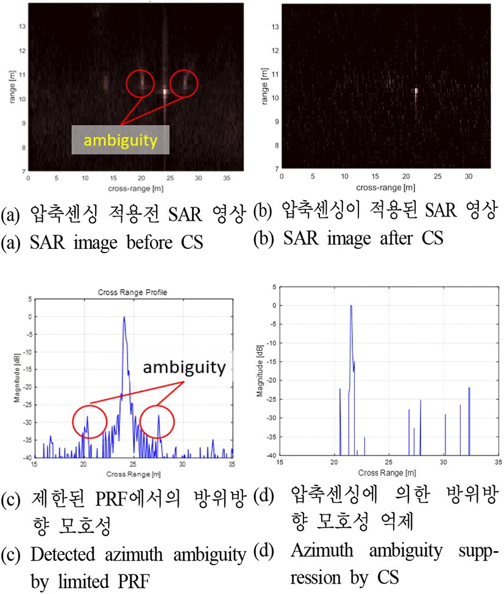

연구 과제
무인기 기반의 SAR 시스템 제작(1)

관련 논문·발표
- DDS 기반의 소형 SAR 시스템 송수신장비 개발 (2016)
- 드론을 활용한 초소형 SAR 영상 구현 및 품질 보상 분석 (2016)
- UAV SAR payload design and high resolution target detection modelling using STK (APSAR 2009)
출처
- 구 연구실 홈페이지 / 연구실-수행-과제
- 구 연구실 홈페이지 / services/고품질-sar-영상-레이다-및-신호처리
- kci.go.kr / kciportal/ci/sereArticleSearch/ciSereArtiView.…
- koreascience.kr / article/JAKO201611962057359.pdf
- kci.go.kr / kciportal/ci/sereArticleSearch/ciSereArtiView.…
- koreascience.kr / article/JAKO201630762634017.pdf
- ntis.go.kr / ThSearchProjectList.do